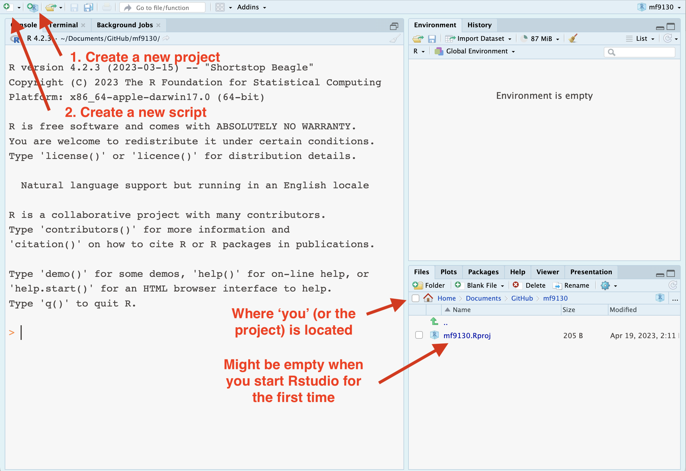
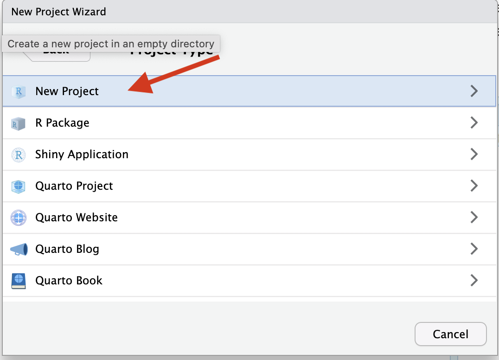
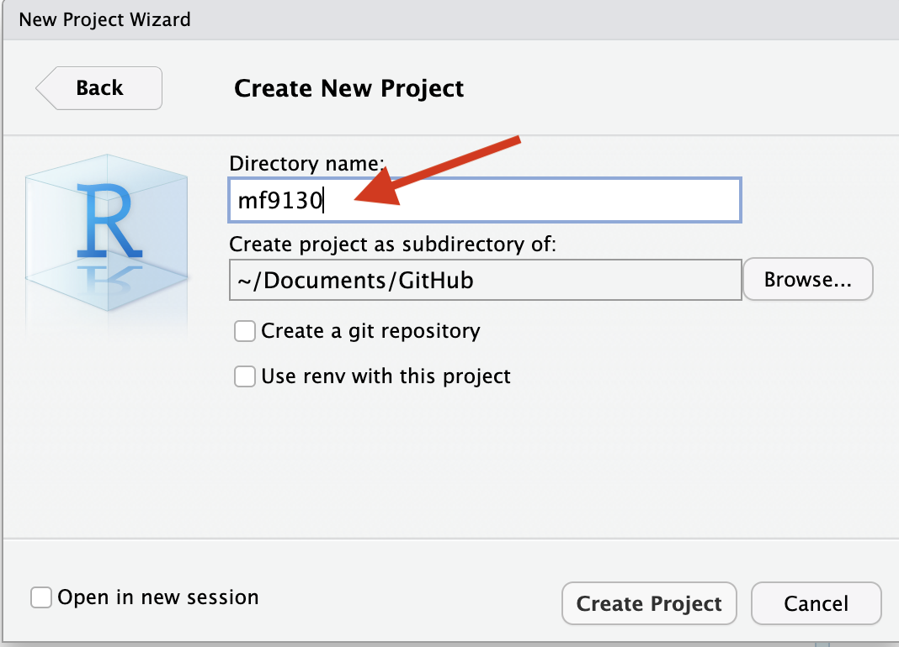
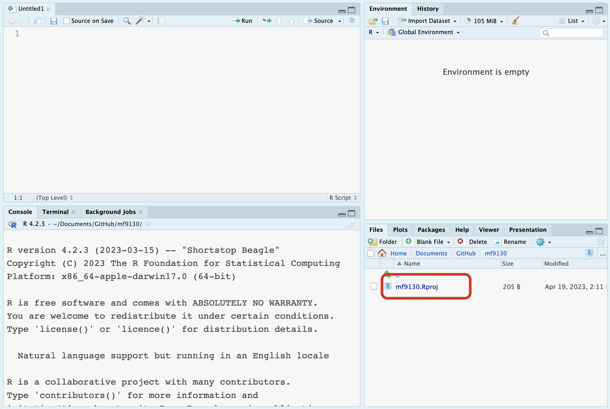
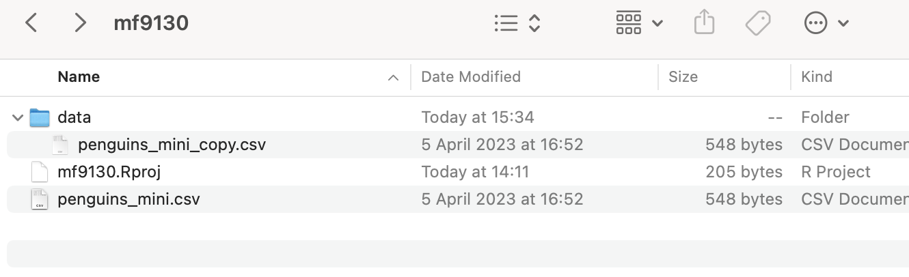
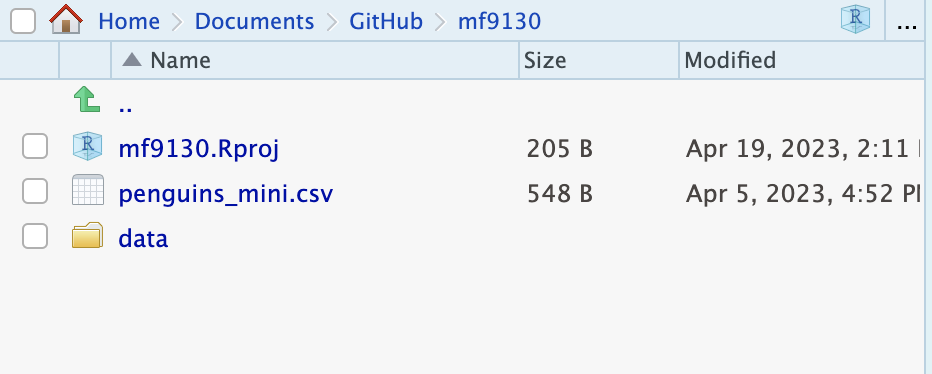
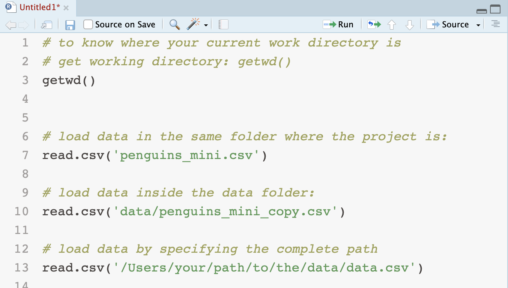

RStudio and Posit
RStudio is a free and open-source IDE (integrated development environment). RStudio IDE is developed by Posit, previously RStudio PBC.
It is convenient to download RStudio to your laptop or desktop; or use RStudio Cloud (need internet connection).
When you open Rstudio, you will see something like this.

You might NOT see anything in the bottom right panel, because you might not have a Project yet.
Don’t worry, we will learn how to create it.
Create a new project
You can use Rstudio without a project. However, it can help you navigating the workspace by
- creating a folder
- collecting your scripts and documentation
As a result, you can find things more easily, and do not need to set a path every time you open R.
Click the button on the top left, it allows you to craete project. We choose New Directory.


You need to give this project a name. We can call it mf9130 for now.
RStudio will also ask you where to put this project; you can put it somewhere easy to find.

Now you will see a new Rstudio session has been opened. At this point, you should be able to see the bottom right panel with a blue icon, with your specified project name.

Navigate your project
The benefit of creating a project is that all your work (code, documentation, possibly datasets) is put in one place.
To keep things organized, people typically do one of the two things when it comes to data:
- store the data in the same folder as other related code and analysis (this is what we are showing now);
- store all the data from different studies together somewhere else, inside a
data folder.
Both are good practices, as long as you stay organized.
Example: import data in Rstudio
Assume that you have the following datasets:
penguins_mini.csv in the same folder as your mf9130.Rprojpenguins_mini_copy.csv in the data folder, inside your project folder
- we would refer to it as
data/penguins_mini_copy.csv
- if you use windows system, it could look like
data\penguins_mini_copy.csv.
In Rstudio project, you can see them presented in the same way that matches your folder.


To load data within the Rstudio project, you only need to call the relative path to the data: for example, penguins_mini.csv or data/penguins_mini_copy.csv
If your project called /Users/your/project/location/proj, and your data is located in /Users/your/project/location/data/data.csv, the relative path between the project and data is data/data.csv.
To load data outside the project, you need to specify the absolute path in your system (looks like the last line below). It can be a bit annoying to do it everytime, so it might be a good idea to create a project!
